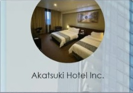
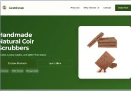

2023 — 2027 Expected
Bachelor of Science in Information Technology
Davao del Norte State College · 4th year
IT student · Davao del Norte, Philippines
Aspiring Web Developer UI/UX Enthusiast
I’m Jose Niño Andam Agbas, an Information Technology student who enjoys building useful, user-friendly digital experiences. I’m growing my skills in web development and interface design, one project at a time.
01 / About me
I’m a motivated IT student interested in web development, UI/UX design, and cybersecurity.
I use Visual Studio Code for coding and Figma to explore interface ideas. I enjoy learning new technologies, improving my technical skills, and creating projects that feel clear and useful to the people using them.
To gain practical experience in web development and UI/UX design, apply what I’ve learned in school, and continue growing into a skilled and responsible IT professional.
02 / Education
Building a foundation in technology through study, training, and hands-on projects.
Davao del Norte State College · 4th year
Tubod National Highschool
03 / Skills & interests
Skills I’ve used or am currently developing.
Building the structure and styling of web pages.
Exploring code, version control, and interface design.
Learning collaboratively and sharing ideas clearly.
04 / Selected work
A look at the school projects and ideas I’ve worked on while learning.

A hotel reservation and billing system concept for managing bookings and availability.

An eco-focused store concept featuring an alternative to plastic scrubbers.
A login and authentication dashboard project exploring web security fundamentals.
05 / Contact
I’m open to learning opportunities and conversations about web development, design, and technology.
Email me